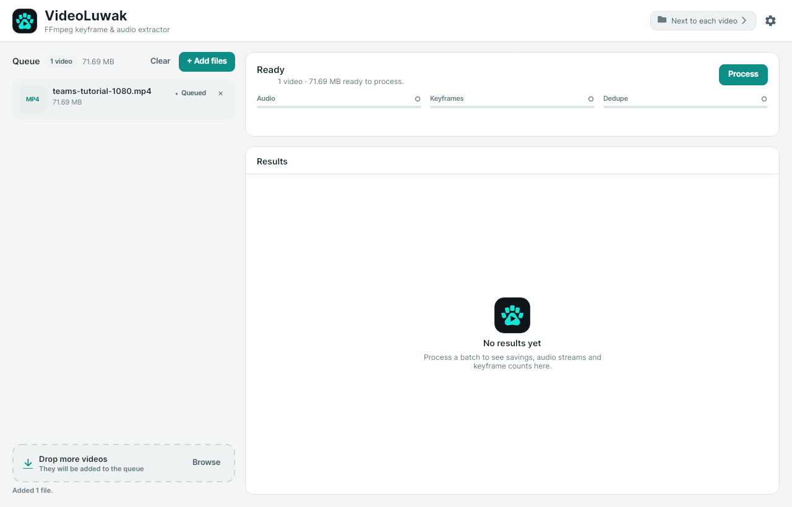
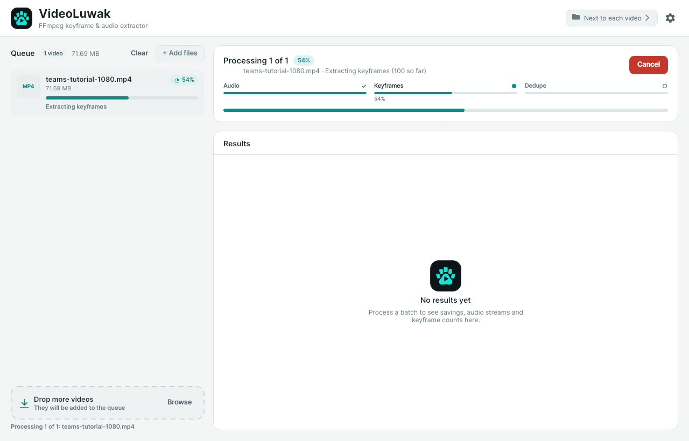

Turn a presentation video into clean audio and just the slides that matter.
VideoLuwak extracts every audio stream as a 16-bit PCM WAV, every true keyframe as an image, and a de-duplicated set of slides. A dependency-free 64-bit hash removes the near-identical frames. Everything runs locally — ready for transcription and multimodal models.
From recording to transcript-ready, in three passes.
The desktop queue and the command line run the same engine. There is no upload step and no intermediate cloud service — just FFmpeg, the local filesystem, and a small .NET pipeline.
01
Audio
Every audio stream is probed and extracted separately to 16-bit PCM WAV. The default downmixes to mono and resamples to 16 kHz — the input Whisper, Parakeet and wav2vec expect. Sample rate, channels, high-pass filtering and EBU R128 normalization are optional.
02
Keyframes
VideoLuwak asks FFmpeg for genuine I-frames only, not every scene-change guess. Frames are written in chronological order with zero-padded names, so sorting files alphabetically keeps them in sequence.
03
Dedupe
Each keyframe gets a dependency-free 64-bit perceptual hash. Frames within the Hamming-distance threshold are dropped, and the reference hash always rolls forward, so a slow transition cannot drift away from the original slide.
02Features
Built for one job, with no extra ceremony.
A compact utility that turns a recording into a bundle you can inspect, script and hand to a model without preprocessing.
Built for speech-to-text
Mono, 16 kHz, 16-bit PCM by default. Whisper, Parakeet and wav2vec can consume the WAVs without another conversion step.
Fewer frames, same ideas
Perceptual de-duplication keeps the distinct slides and removes the near-identical ones, while preserving chronological order.
Batch workspace
Queue several videos at once, follow per-file progress, and see aggregate savings calculated only from successful runs.
Inspectable output
Plain WAV, JPG or PNG files plus processing_result.json and audio_streams.json. Open them, copy them, or feed them onward.
GUI and CLI
Drop files into the Avalonia desktop app or script the same engine from a terminal. The settings mirror the CLI flags.
Portable by design
Self-contained .NET builds for Windows, Linux and macOS. FFmpeg remains a system dependency — no bundled binaries or redistributed codecs.
03In the app
A compact workspace for a mundane job.
Queue files, watch the three stages advance, and read the result at a glance. These are real screens from a 13-minute Teams tutorial — 71.69 MB in, 49.67 MB out.
Queue

Queue — add or drop files, then see size, status, and per-file progress in one list.
Processing

Processing — follow Audio → Keyframes → Dedupe as the pipeline advances, with live progress.
Results
Results — 30.7% smaller, one STT-ready audio stream, and 127 of 195 keyframes kept. Savings are computed from successful files only.
04Output
From video to a tidy folder.
Each input gets its own output folder, named after the video with the final extension removed. Nothing proprietary; every file opens with standard tools.
audio_streams.json records each stream's source and output format — sample rate, channels, sample format, and whether STT optimization was applied.
processing_result.json summarizes original size, extracted audio, keyframes extracted, kept and removed, total output size, and the reduction percentage.
Zero-padded names keep alphabetical order equal to chronological order — kf_000001, kf_000002, and so on.
presentation/output folder
Output folder structure
<video name>/
├── audio/# one .wav per audio stream + a manifest
│ ├── audio_01_eng.wav
│ ├── audio_02_spa_Commentary.wav
│ └── audio_streams.json# source + output format per stream
├── keyframes/# every true keyframe (I-frame)
│ ├── kf_000001.jpg
│ └── ...
├── final_keyframes/# kept after perceptual-hash de-duplication
│ └── ...
└── processing_result.json# machine-readable summary
Plain files. No database.WAV · JPG/PNG · JSON
05Command line
The same engine, scriptable.
The GUI and CLI share one pipeline. Point it at one file or a batch, and tune de-duplication, frame format, and audio conversion with flags.
Windows first run can install FFmpeg automatically. macOS builds are ad-hoc signed but not notarized.
07Prerequisites
Bring your own FFmpeg.
FFmpeg and FFprobe are system requirements, not bundled. VideoLuwak looks for them on the system path and in standard package-manager locations. Windows can install them on first run.
Windows
winget install Gyan.FFmpeg.Essentials
Or let the first run handle it: VideoLuwak --setup-ffmpeg.
Linux
sudo apt install ffmpeg
dnf and pacman work too — for example, sudo dnf install ffmpeg.
macOS
brew install ffmpeg
Homebrew and MacPorts locations are searched automatically, including when the app opens from Finder.